Capturas em 1440 × 900, salvo indicação. "Antes" é a versão da rodada premium (aprovação por clique no Hanko). Na 8.2 não há botão nem clique: a cena 07.2 encena a aplicação do Hanko automaticamente.
07.1 A decisão aguarda
Antes: selo clicável sobre painelAgora: portal 3D fechado (laca, filete vermelho, dourado envelhecido, shoji, trava), sem painel opaco
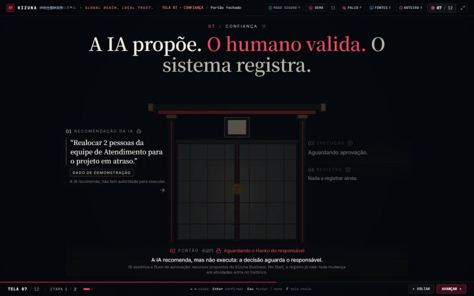
07.2 A aprovação libera a execução
AntesAgora (estado final, 4,2 s): 承認 na placa, portal aberto, luz e caminho, mudança autorizada, registro
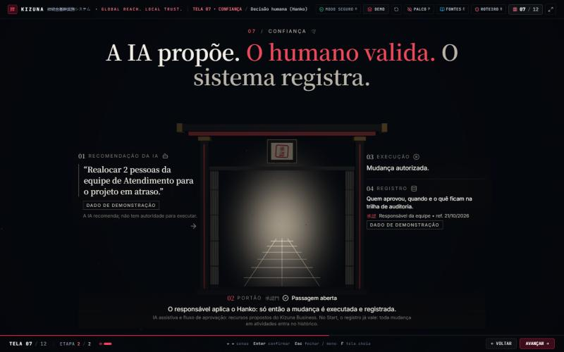
07.2 Sequência automática
0,75 s • o Hanko surge diante da placa
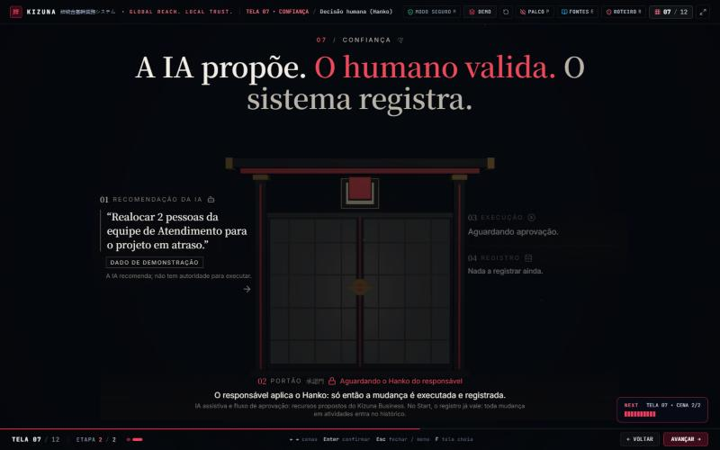
1,3 s • carimbo: pulso de luz e 承認
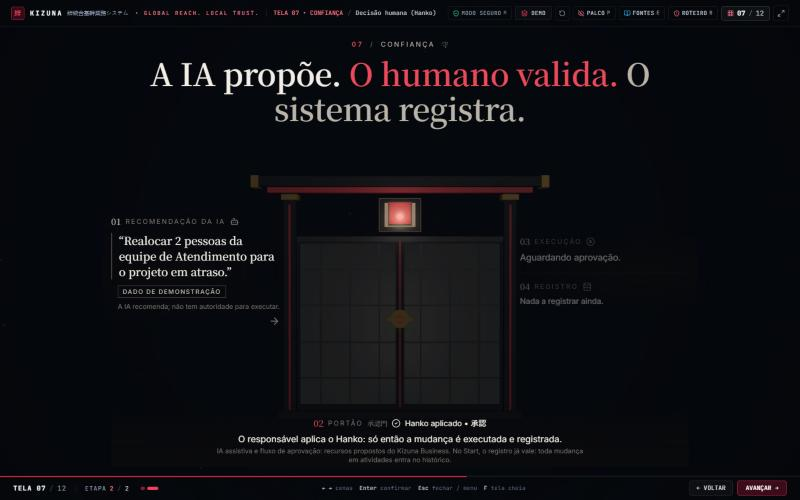
2,7 s • a trava gira e os shoji deslizam
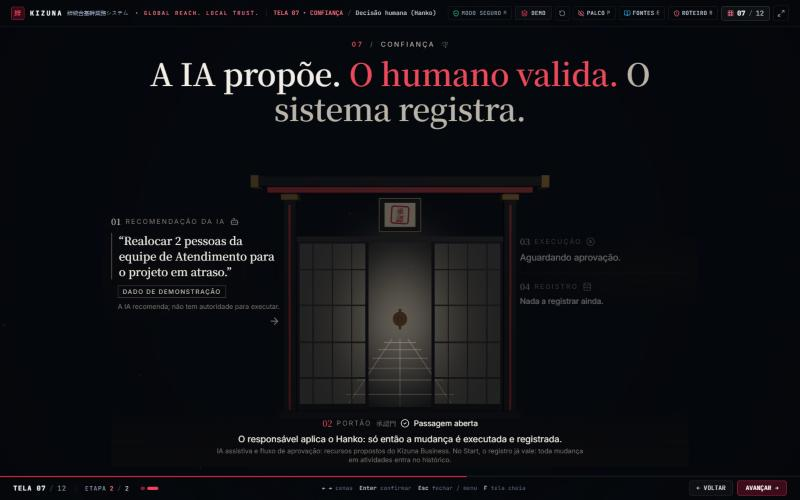
07 Outras resoluções e volta à cena 1
1024 × 768 • 07.1
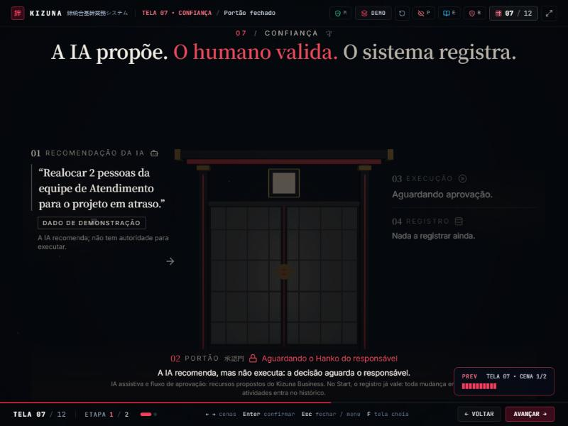
1024 × 768 • 07.2
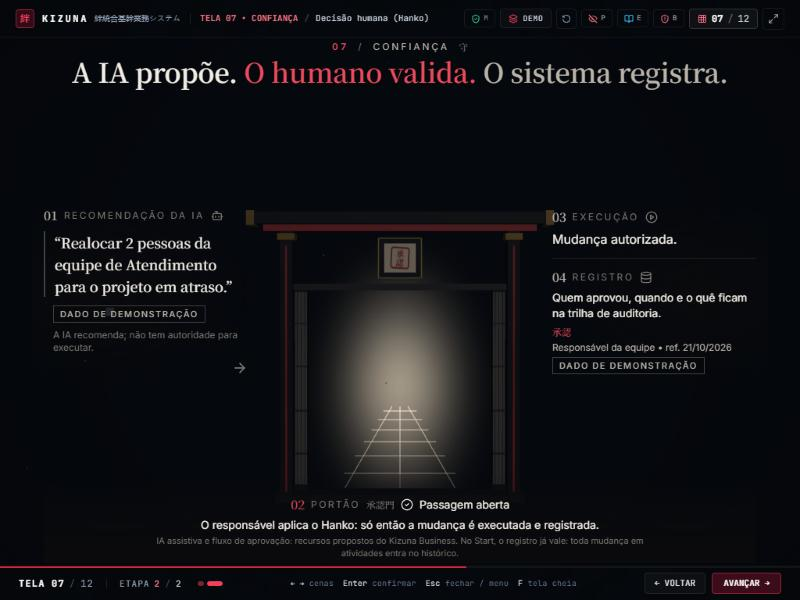
800 × 600 • 07.1
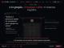
800 × 600 • 07.2
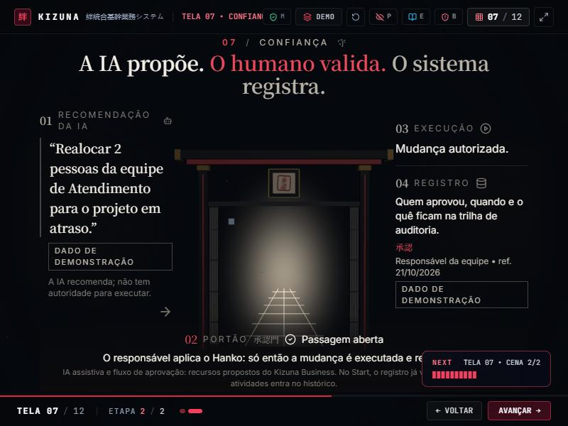
Voltar de 07.2 para 07.1 fecha o portal e limpa execução e registro
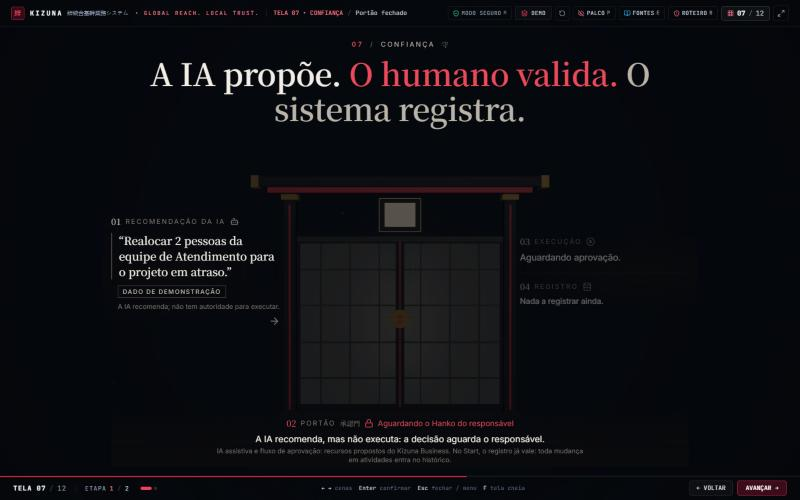
08 Antes: duas cenas
Antes • 08.1 anéis clicáveis (Enterprise)Antes • 08.2 simulador
08 Agora: quatro cenas, uma estrutura que cresce
08.1 Start • nível 1: plataforma, 4 colunas e conexões
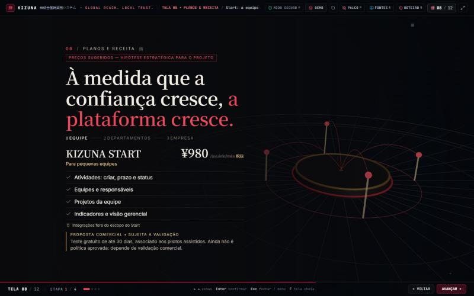
08.2 Business • níveis 1–2: segunda plataforma, 8 colunas